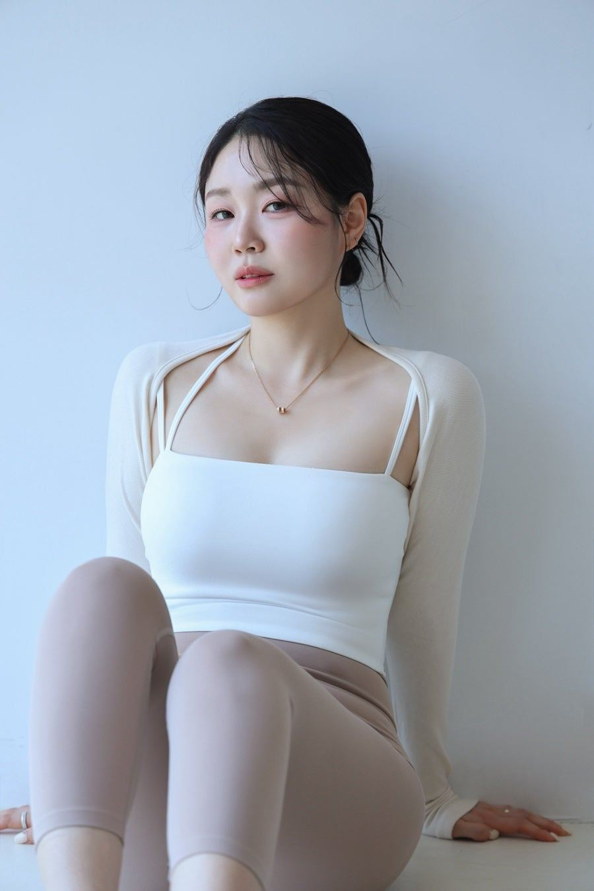
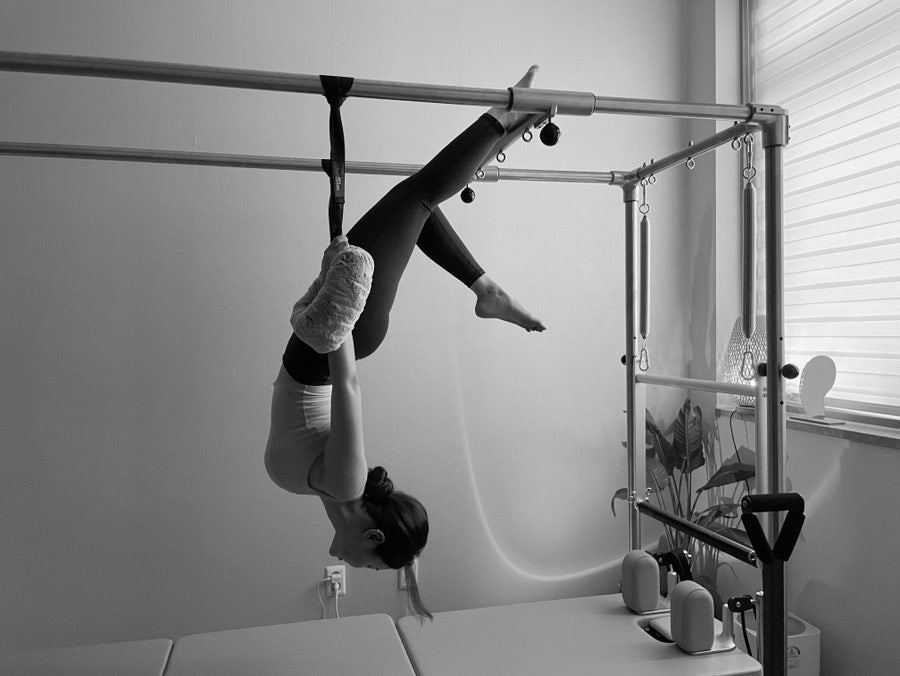
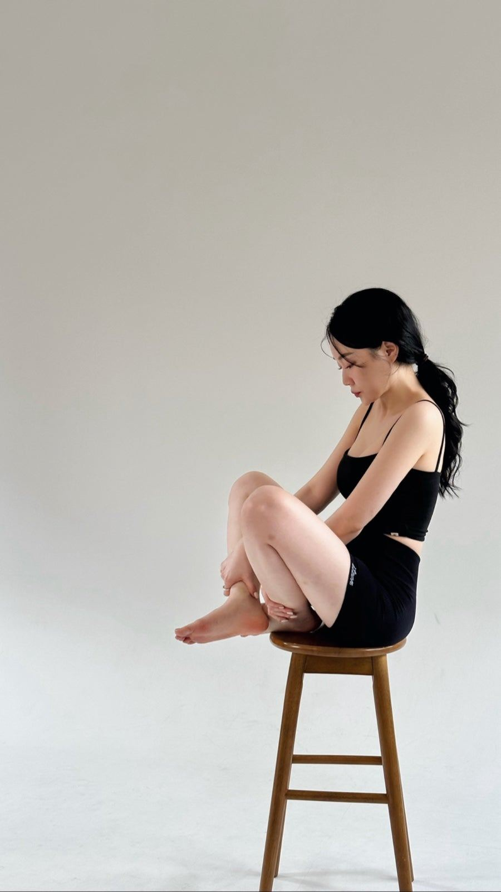
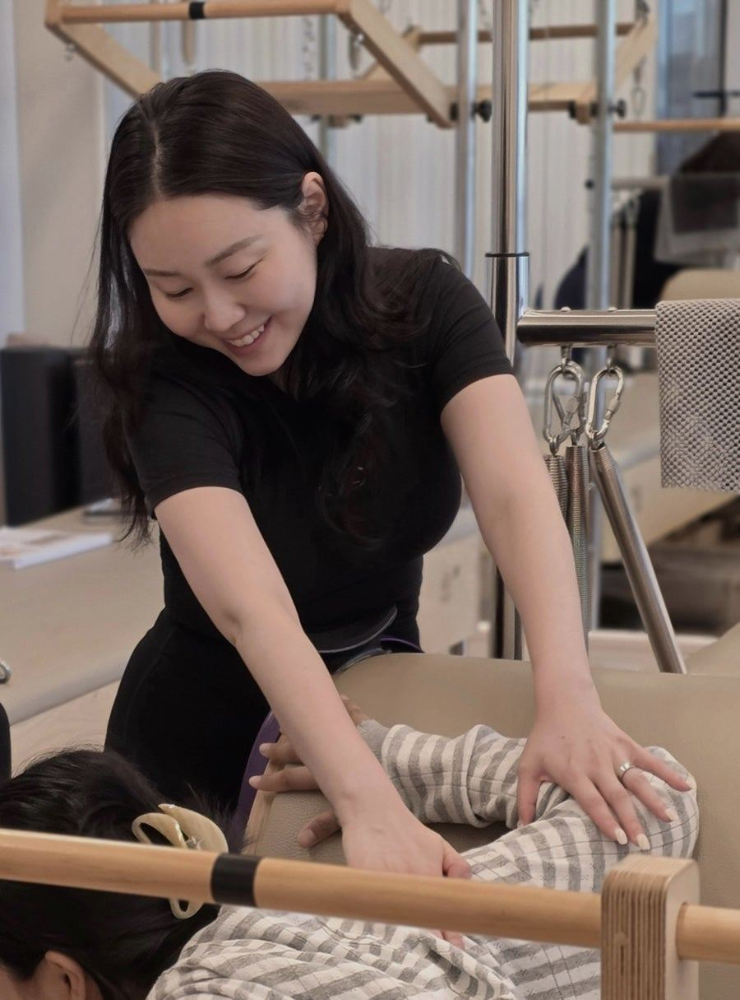
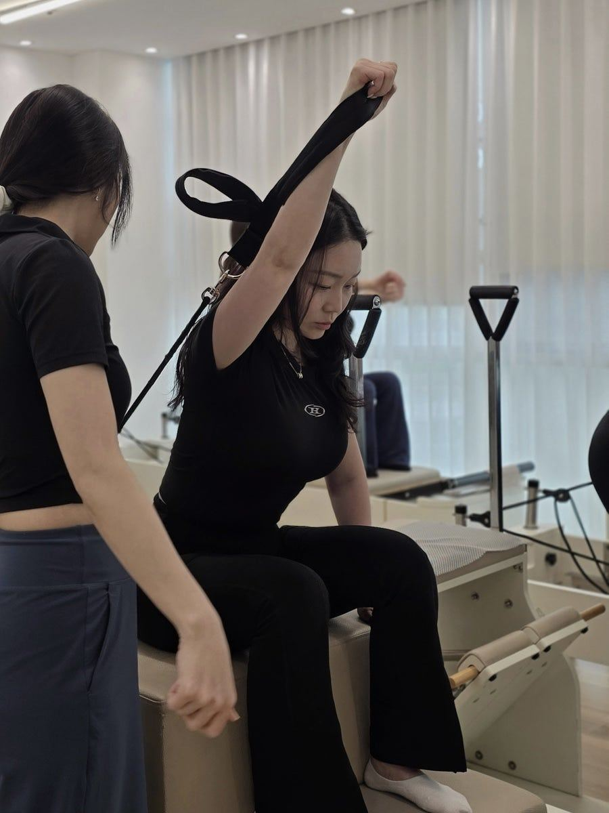
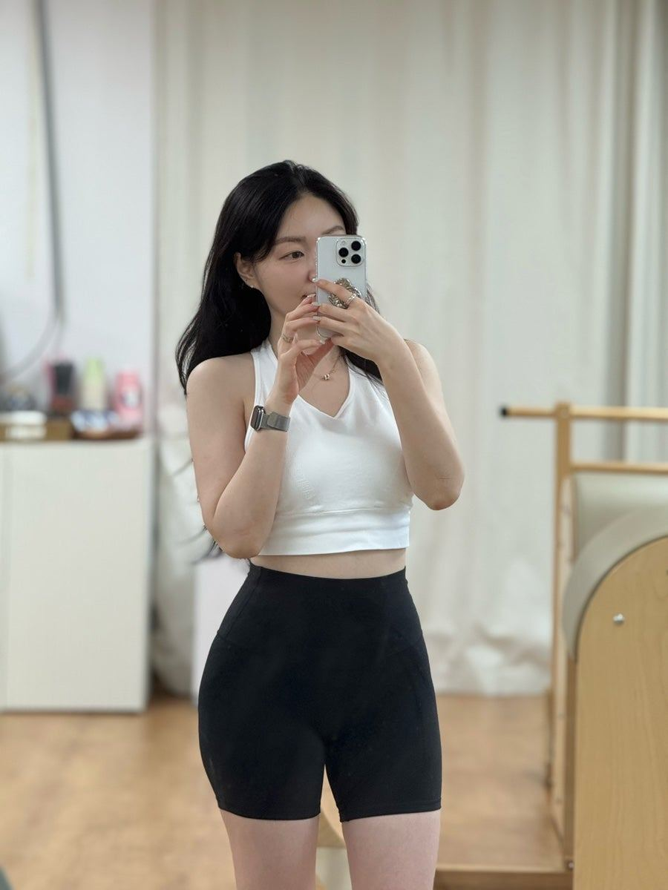
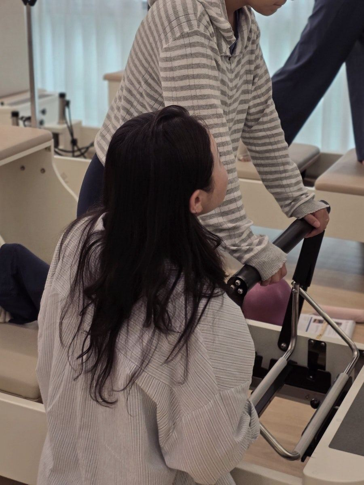

Meeting Origin, Obtaining Mindfulness
: Ultimate Awakening.
MOOMUA · 無嫵我
비워낸 자리에
남는 것,
진짜 아름다운 나
본연의 나를 만나고, 마음 챙김을 얻는 시간
요즘은 정보가 너무 많아요.
채우는 게 아니라,
비우는 것.
이름의 의미
나를 비워야
진짜 나를 만난다
비우다
아름다운 나
몸과 마음의 불필요한 것들을 비워내고, 본연의 상태로 돌아간다. 예쁘고 화려한 이름은 많지만, MOOMUA는 반대로 가고 싶었습니다.
들이쉬고내쉬고
아픈 곳에 힘을 더 주기보다
연결된 곳의 긴장을 비워낼 때,
몸은 스스로 균형을 찾습니다.
로고에 담은 이야기
줄에 몸을 맡긴 채
만들어지는 아치

불필요한 걸 내려놓고 본연의 균형으로 돌아가는 과정을 그렸습니다. 일부러 완벽하게 다듬지 않고 투박한 질감을 남겼어요. ‘있는 그대로의 나’를 받아들이는 자연스러움입니다.
발바닥에서 시작해 척추를 따라 머리까지 이어지는 흐름. 몸과 마음, 감각과 호흡, 내면과 외면이 하나로 연결되는 순간. 그게 MOOMUA 수업이 지향하는 시간입니다.
MOOMUA가 지키는 것
빠른 변화보다,
스스로 아는 몸
MOOMUA는 빠른 변화나 화려한 결과를 약속하지 않습니다. 대신 내 몸의 감각을 스스로 알아차리고, 스스로 설계할 수 있게 돕습니다.
- 01
진정성
직접 겪고 검증한 것만 나눕니다.
- 02
연결성
머리부터 발끝까지, 몸은 하나로 연결되어 있다는 관점으로 봅니다.
- 03
건강한 영향력
유행하는 보조제나 시술 대신, 오래 지속 가능한 루틴을 전합니다.
Instructor

김현주
MOOMUA 대표 · 필라테스,온:유 대표원장
“움직임을 이해하고, 기능을 회복하며, 더 나은 신체 능력으로 나아가는 과정을 함께합니다.”
몸은 다 연결되어 있다는 걸, 몸으로 배웠어요
아픈 곳은 매번 달랐지만, 원인은 늘 다른 곳에
- 발목 · 무릎
중고등학생 때 이유 없이 아프던 통증이, 운동을 하니 사라졌습니다.
- 허리 ← 골반
10년 전 요가 수련 중 다친 허리 인대. 지금도 골반 정렬이 틀어질 때면 통증이 찾아옵니다.
- 손목 ← 견갑
핸즈온으로 상한 손목. 견갑 안정화 운동을 시작하자 보호대 없이 수업할 수 있게 되었습니다.
- 아픈 곳은 매번 달랐지만,
원인은 늘 다른 곳에그래서 아픈 부위만 붙잡기보다, 몸 전체가 어떻게 연결되어 있는지 함께 알아갑니다.
- 0년
필라테스 지도 경력
- 0곳
거쳐 온 센터
- 0개
자격 · 수료 과정
- 0곳
활동 지역 · 인천 속초
수업 분야
개인의 목적과 상태에 맞춘
맞춤형 운동
- 01재활·기능회복Rehabilitation
- 02산전·산후 케어Women’s Health
- 03체형교정·통증관리Posture & Pain Care
- 04필라테스·요가Pilates & Yoga
함께해 온 회원님들
초보 강사 시절부터 1:1 개인레슨을 전문으로 해 오며, 조심스러운 접근이 필요한 분들을 많이 만났습니다.
- 허리디스크
- 무릎 수술 후
- 하지정맥 케어 후
- 무지외반
- 무릎 과신전
- 편평등
- 고관절 내회전 제한
- 배구·양궁·소프트볼·축구 선수
어떤 히스토리를 가진 분이 오셔도, 자신 있게 함께합니다.




Career & Education
필라테스 지도 경력 8년
경력
- 현필라테스,온:유 대표원장
- 전킴스요가필라테스 주안점
- 전스포애니 인천산곡점 (매트, 기구필라테스)
- 전ING필라테스 부평구청점 (오전·오후 전임)
- 전Better Line 필라테스
- 전홈플러스 인천논현점 문화센터
- 전바디홀릭필라테스 학익점 (오전·오후 개인레슨 전임)
- 전젠필라테스
스포츠지도학과 재학 중
자격 및 수료
- (사) 코리아요가얼라이언스 요가지도자 자격증 RYT300
- KYA Level 1. Mat Pilates
- KYA Level 2. Props
- KYA Level 3. Cadillac, Reformer, Barrel, Chair
- 소도구메디컬트레이닝코리아 메디컬해부학 수료
- 소도구메디컬트레이닝코리아 전문가과정 수료
- 더 에이랩 산전필라테스 워크샵 수료
- Gyrotonic 프리과정 이수
- 한국인재교육원 재활트레이닝 전문가 과정 Lv.1 / Lv.2
- BALANCED BODY MOTR 과정
- The Center For Women’s Fitness: 근막이완·산전산후·복직근 이개 과정
- CES 기능해부학 수료
- 한국암재활운동연구소 암재활필라테스 과정
어디서 만나나요
평일은 인천,
주말은 속초
- 평일 · 인천
- 1:1 개인레슨 센터 필라테스,온:유
- 주말 · 속초
- 2024년부터 강원도 속초를 기반으로 활동
수업 · 강의 문의
기업·기관 대상 강의 문의도 언제든 편하게 남겨 주세요.